A) Set Up
This chapter guides you through the process of connecting hardware components and installing software to make the heliCamTM C4 ready for use.
Hardware Installation
A pre-requisite for its operation is that heliCamTM C4 is properly powered, temperature-regulated and wired to control elements. The following hardware setup guide lays out how the camera is installed, and which precautions must be observed to prevent damage.
Package Contents
The recommended order of the heliCamTM C4 package includes several hardware accessories:
1x heliCamTM C4 Lock-In Camera
1x heliDriverTM D3 Power Supply, Interface, and Illumination Control Unit (LIA Module)
1x AC/DC Switching Adapter with 24V DC, 60W Output for Power Supply to the heliDriverTM D3
1x LED Module with Integrated Cable (beige) and Connector to generate Test Inputs
Interconnecting Cables:
1x GigE Cable (green)
1x Connecting Cable (gray)
2x BNC-BNC Cable (black)
Note
If the contents of the package are incorrect, insufficient, or damaged in any way, contact Heliotis or your local distributor.
heliCamTM C4
In this document, the term heliCam™ C4 refers to the physical camera, which performs in-pixel lock-in amplification of optical signals. Several elements on its surface are important for its installation and operation or are prone to damage if handled improperly (see Fig. 2). Hereafter, each of them is elaborated on.
{kind=link}
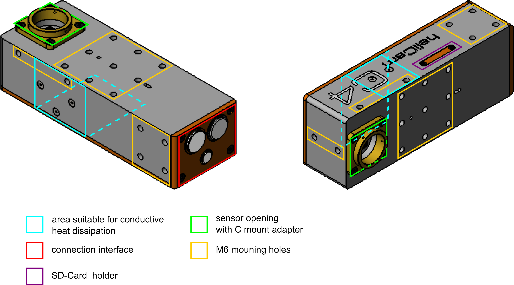
Fig. 2 heliCamTM C4 Exterior
Thermal Requirements
Important
At room temperature and under standard operating conditions, the heliCamTM C4 requires cooling.
The heliCamTM C4’s power consumption is 25-30 W. Its surface area is too small for passive cooling by the surrounding air to dissipate the generated heat fast enough without additional measures. With this cooling effect alone, the camera’s core temperature will eventually exceed the scope of valid values, which is below 85 °C. Overheating may cause operational instabilities and ultimately leads to a safety shutdown.
An integrated, fan-based cooling accessory is available (see Fig. 3). It suffices at ambient temperatures ≤ 40 °C. When mounting a heliCamTM C4 equipped with this accessory, make sure that air can be aspired and discharged without obstruction. The fans may be switched off temporarily, e.g., before taking very vibration-sensitive measurements. This prevents any interference that could be caused by the cooling mechanism.
{kind=link}
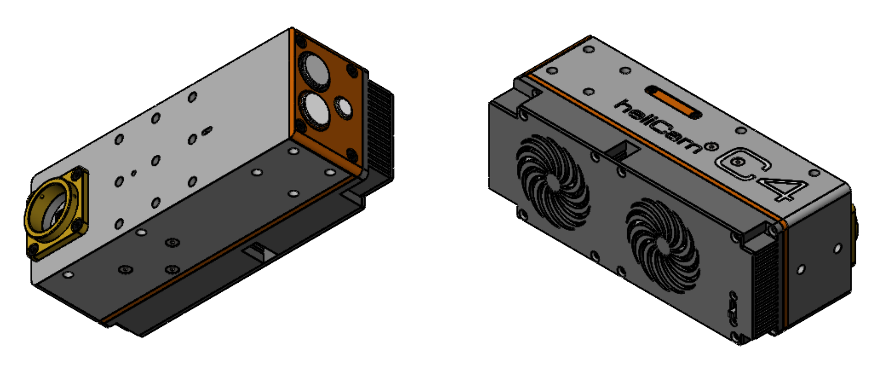
Fig. 3 heliCamTM C4 with HSFC4.1 Cooling Accessory
If the accessory for temperature control is not purchased, it is the user who must provide external cooling to the lock-in camera. Although the choice of cooling system is ultimately up to him or her, its heat dissipating capacity must be at least equivalent to that of either of the following measures:
at ambient temperatures ≤ 40 °C, an airflow ≥ 1.5 m3/min ≈ 45 CFM can be provided to the heliCamTM C4. This condition is met by most fans with at least 40 mm diameter when operated at 12 VDC.
the heliCamTM C4 may be thermically well-connected to a heat sink with a thermal resistance < 0.65 K/W, e.g., an aluminum surface > 0.14 m2 with a recommended length / cross-section ratio < 50 m-1. The areas most suitable for dissipating heat by conduction are marked in Fig. 2.
Sensor Opening
The lock-in camera’s light-sensitive zone - the front of its image sensor - is located within a shallow cavity, as shown in Fig. 2. The heliCamTM C4 opening has a C mount. By way of these standardized screw threads, corresponding objectives may be affixed at a normed distance from the sensor.
During shipment, the cavity containing the image sensor is sealed either with a screwed-on cap or, if commissioned, the LED module. Upon arrival, the latter is thus already correctly placed for the starter experiment described in the next section, B) Get Started. Eventually, either cover will have to be removed before acquiring images of the ultimate object of interest.
Important
There is no additional protective layer on the sensor. So be careful not to contaminate or damage the image sensor once it is exposed. The cap may be reattached when the camera is not used for prolonged periods to protect the sensor from dust and damage.
The sensor’s photoactive area is cleaned before shipping. If the sensor gets dirty during use, contact Heliotis support. Do not proceed with cleaning the sensor on your own before you receive precise instructions and apply the utmost caution when you clean it under the guidance of the support team.
Connection Interface
The bottom of the heliCamTM C4 contains an interface with three color-coded connectors (see Fig. 4):
An 8 Pin acquisition control and data transfer connector (grey) for linking the camera to a computer by means of a Gigabit Ethernet (GigE) cable (green). Its counterpart lies at the grey coated end of said cable.
A 19 Pin Power Supply and I/O connector (orange), for wiring the camera to the heliDriverTM D3. The corresponding end of the Connecting Cable (grey) has an orange coat.
A 2 Pin output connector (green) for relaying a modulated signal originating from the heliDriverTM D3 to the LED module. The LED module can be attached with the green coated end of its cable.
{kind=link}
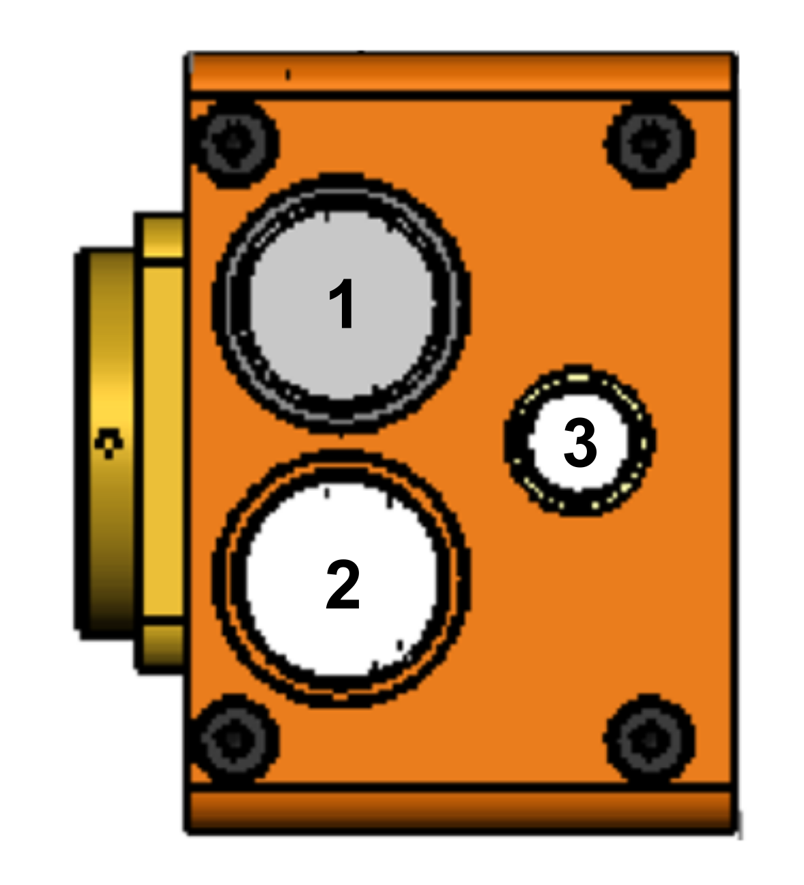
Fig. 4 heliCamTM C4 Connection Interface
Mounting Holes
In an experimental setup, the camera’s position may be fixed by means of dedicated M6x1.0 mm - 6H mounting holes (9 x \(\downarrow\) 4 mm on the front, 6 x \(\downarrow\) 5 mm on left and right faces each, 2 x \(\downarrow\) 4 mm on top, see Fig. 2 and technical drawings in Annex).
SD Card Opening
The heliCamTM C4 stores its file system on an SD card, which is located underneath a screwed-tight cover (see Fig. 2).
Note
If you suspect that the SD card is corrupt, please contact Heliotis support to receive guidance on how to rewrite its contents. Do not unseal the SD card opening unless explicitly instructed to do so by the Heliotis support team.
heliDriverTM D3
The heliDriverTM D3 is a connection module, which supplies power to the lock-in camera. Moreover, it optionally serves as a communication interface to feed in and process external control signals, as well as to read out camera and sensor status information in real time. The illumination of the accessory LED module can be controlled from the heliDriverTM D3 too.
{kind=link}
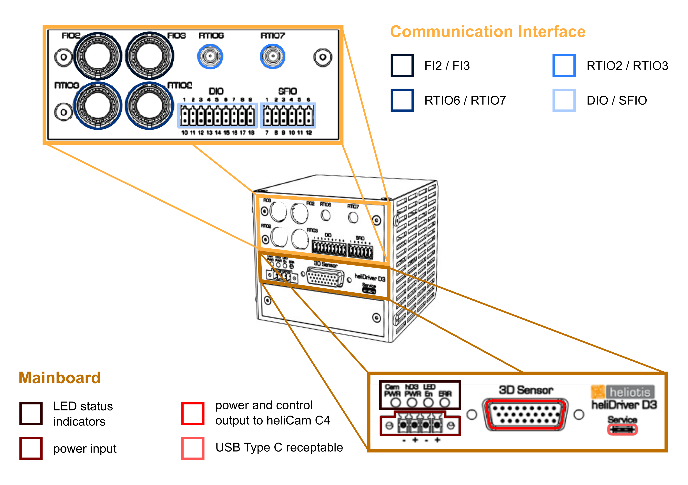
Fig. 5 heliDriverTM D3 Front Panel with Mainboard and Communication Interface
Mainboard
The heliDriverTM D3 requires a 24 VDC, 60 W input via its main board (see Fig. 5). This can be ensured by connecting it to a 115/230 VAC socket via the AC/DC switching adapter included in the standard shipment. A power cable with C13 coupling for the adapter must be procured separately by the user.
The AC/DC switching adapter included in the standard delivery comprises a counterpart to the power input connector (see Table 5). Located just above this input connector are four LED status indicators, providing useful feedback on the state of hardware components once the setup is powered.
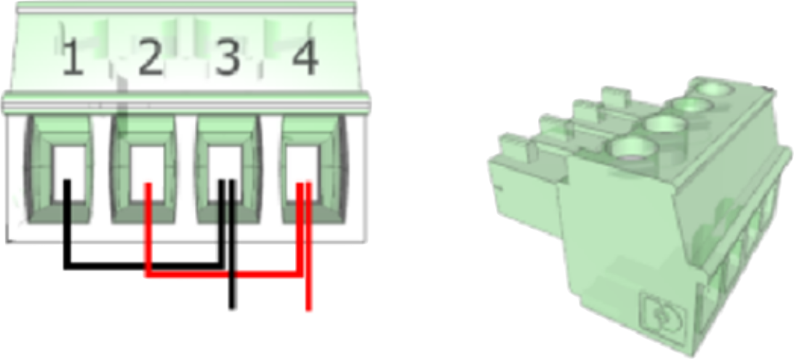 |
|||||||||||||||
|
{kind=link}
The Connecting Cable (grey) fits the D-Sub connector for power supply and signal transmission to the lock-in camera on the heliDriverTM D3’s main board. In addition, the heliDriverTM D3 offers surge, reverse polarity, and transient protection to the camera.
Communication Interface
For many lock-in applications it is desirable to synchronize the data acquisition and demodulation with external control signals. For this purpose, the heliDriverTM D3 offers a communication interface (see Fig. 5).
Trigger signals to activate the recording or to time the demodulation sequence in the image sensor, such as the external reference signal, are most conveniently delivered to the camera via the inputs FI2/FI3 (with BNC connectors) and RTIO6/RTIO7 (with SMA connectors). External triggers should be rectangular signals with 0 V minima 5 V and maxima.
Synchronization, debugging or monitoring may require reading back status signals from the camera in real time. For this purpose, outputs RTIO2 and RTIO3 are the preferred connectors. Note that output signals from the camera have a fixed latency of ~ 1 μs.
With the BNC-BNC cables included in the standard delivery, these inputs and outputs can be connected to other elements of your experimental setup or to electronic test equipment.
Alternatively, DIO and SFIO pins can be used to input and output signals at the cost of a reduced transmission speed. For the (default) DIO and SFIO pin assignment see the heliDriverTM D3 data sheet, Section Lock-In Amplifier Module.
Illumination Control
The heliDriverTM D3 that comes with the heliCamTM C4 comprises an internal, software-controlled signal generator. This unit allows you to create an electrical sine wave in a user configurable fashion to drive the Heliotis LED module included in the standard delivery.
LED Module
The LED module - when fed via the heliCamTM C4 with electric control signals generated by the heliDriverTM D3 - can be used to generate simple, well-controlled, amplitude-modulated optical signals. Even if you ultimately do not need such input signals in your research, the LED module should be useful when getting familiar with the lock-in camera and testing your setup.
Interconnecting Cables
The three cable types included in the standard shipment are respectively used for the following:
GigE Cable (green): relaying software control commands to the heliCamTM C4 and fast transmission of measurement data back to the lab computer.
Connecting Cable (gray): power supply of the heliCamTM C4 and transfer of control signals between heliDriverTM D3 and heliCamTM C4.
BNC-BNC Cable (black): communication of time-continuous control signals from and to non-Heliotis elements of the experimental set up via the heliDriverTM D3.
Wiring
Fig. 6 summarizes schematically how the heliCamTM C4 and its accessories are wired together. To get started, join the contents of the shipment accordingly.
Important
For safety reasons, power the ensemble only after all individual pieces are connected.
{kind=link}
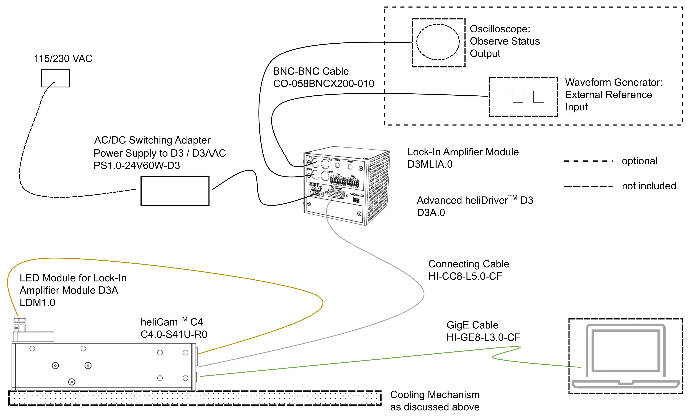
Fig. 6 Wiring of the heliCamTM C4 with Components of the Standard Delivery Package
Checking the Hardware Setup
When you are done, the LED status indicators on the heliDriverTM D3’s mainboard allow you to check if the heliDriverTM D3 and the heliCamTM C4 are properly powered and can communicate with one another. After switching on these devices, they will boot for a few seconds. In the process, the LED designated “Cam PWR” should go from initial yellow to green, indicating the camera is powered and ready (see Fig. 7).
{kind=link}
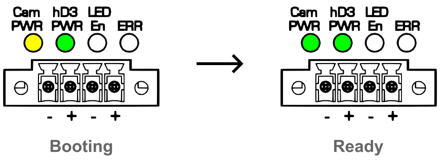
Fig. 7 heliDriverTM D3 LED Status Indicators during and after Booting
Note
If “Cam PWR” does not turn green or the error indicator “ERR” stays on, check the wiring. Should the problem be persistent when you switch the power supply off and on again, contact Heliotis support. Please report the state of the LED status indicators when you reach out to the support team to ensure that you receive focused help right from the start. For the detailed meaning of individual LED status indicators, you may consult the heliDriverTM D3 data sheet.
Software Installation
Here, you are introduced to Heliotis software for the heliCamTM C4 and receive instructions on how to download as well as install it on the computer, which you connect to the lock-in camera. With this software, the heliCamTM C4 can be operated in different ways.
A software development kit (SDK) with usage examples, allows you to control the heliCamTM C4 from most common programming platforms, such as Python, MATLABTM, or LabVIEWTM.
To get started and for simple validation tasks, the proprietary heliViewerTM application is the recommended and simple-to-use alternative to more powerful, but rudimentary, developing environments. It is a LabVIEWTM-based program, built upon the SDK, that features a graphical user interface (GUI) to command the heliCamTM C4.
Software Organization and Integration Options
A brief overview follows, outlining the contents and organization of the software provided by Heliotis and its interfaces with third party software (see Fig. 8) in more detail.
{kind=link}
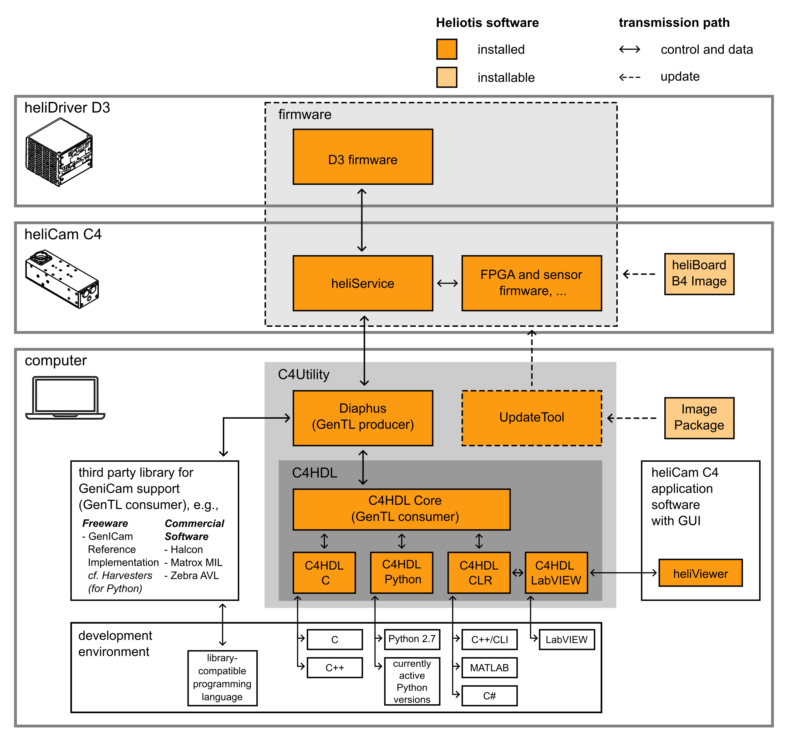
Fig. 8 Overview of Heliotis Software
Firmware
A set of programs, preinstalled before shipment and collectively named firmware, operate on the Heliotis hardware itself, i.e., the heliCamTM C4 and the heliDriverTM D3. In particular, the heliCamTM C4 runs a special Linux version, with a custom-written service. This service, handling the lock-in camera at a low level, is called heliService. No direct user interaction with heliService is envisaged.
Software Development Kit
The communication with heliService is managed by Diaphus, a Heliotis driver software for the connected computer. Diaphus provides a normed interface for controlling machine vision cameras. It complies with the industrial Generic Interface for Cameras (GenICam) consortium standard, which is administered by the European Machine Vision Association (EMVA). More precisely, Diaphus is what is called a GenTL producer within the GenICam framework.
Two principal options for using the heliCamTM C4 through this generic camera interface are supported:
The heliCamTM C4 can be operated using the GenICam interface directly without intermediary software from Heliotis. You can access measurement data and all configurable or readable camera parameters from any environment with a so-called GenTL consumer implementation.
For some programming languages, such as C++, Java, and Python, third party libraries are freely available, that include such a GenTL consumer. Notable are in particular the official reference implementation from GenICam and its user-friendly spin-off for Python, Harvesters, which is available through pip.
In addition, commercial machine vision software often supports GenICam compliant cameras, e.g., MVTec Halcon, the MatroxTM Imaging Library (MIL) and AuroraTM Vision Library (AVL) from Zebra. This list is neither exhaustive, nor does it imply a Heliotis recommendation for these programs.
If you are already familiar with GenICam, you may even wish to implement a GenTL consumer yourself.
You can also control the heliCamTM C4 via the C4 Handler Library (C4Hdl) from Heliotis. The C4Hdl provides a simplified and reduced Application Programming Interface (API) that is proprietary. The core of the C4Hdl is a C++ wrapper around Diaphus. It underlies several libraries, each of which enables you to interact with the heliCamTM C4 in different programming environments. Currently, Dynamic-Link Libraries (DLL) are available in C, Common Language Runtime (CLR) for .NET programs, Python, and LabVIEWTM. Wrapped in this form, libraries can be easily imported into the targeted user application. With this second option, the same camera parameters are accessible as with the first one and the overhead is minimal.
Diaphus, the C4 Handler Library and examples of their use in different programming languages form the software development kit, which is aiding you in the development of application programs for the heliCamTM C4.
updateTool
Heliotis firmware is subject to active further development. Updates make new features available and fix bugs. The GUI-based program updateTool is available to manage comfortably firmware versions installed on the heliCamTM C4 and the heliDriverTM D3 from the connected computer. The updateTool is also useful to check your software set up.
C4Utility
The SDK applications on the computer side, along with the updateTool, are grouped together into a single package named C4Utilitiy.
heliViewerTM
The application software heliViewerTM is used to control camera and illumination parameters through a GUI, as well as to acquire, visualize and store data. It is not a tool for software development, however. The heliViewerTM uses the C4Hdl wrapper library for LabVIEWTM and must be installed on top of the underlying software development kit.
Heliotis Software Download
On the Heliotis website under Support/Downloads, you find the most recent firmware, C4Utility package and heliViewerTM. To gain access, you must register once (see Fig. 9) and wait for your account to be approved.
{kind=link}
Fig. 9 Heliotis Account Registration for Software Download
You receive the heliCamTM C4 with the latest version of the firmware installed at the time of shipment. For the first commissioning, you will therefore just need to download the computer-side applications; C4Utility and optionally the heliViewerTM. The description of the starter experiment in the next section, B) Get Started, is based on the (full version of the) heliViewerTM (for Heliotis devices of the latest generation), which you therefore might want to install. Alternatively, you can get started directly in Python with the help of an illustrative Jupyter Notebook you receive as part of C4Utility. Make sure you download a version of the Heliotis software which is compatible with your operating system.
Later, you may wish to download (updated) firmware and install it on the Heliotis hardware. It is available in two forms:
as an Image Package to upgrade the firmware on your heliCamTM C4 through updateTool once a newer version is released.
as a heliBoard B4 image, the way it is stored on an SD card within the heliCamTM C4. The firmware is only needed in this format if the Heliotis support team explicitly instructs you to overwrite a corrupt file system on the heliCamTM C4.
At the same location, you find a changelog informing you about changes between versions and bug fixes.
Installing C4Utility and heliViewerTM
After you downloaded the Heliotis software, install C4Utility by running the executable “C4Utility*.exe” and following the instructions of the installation wizard. If you decided to install the heliViewerTM as well, do so by unzipping its installation folder and running “setup.exe”. Make sure you install heliViewerTM after C4Utility. As explained above, the latter provides the drivers and interface libraries for communication with the heliCamTM C4, which heliViewerTM relies on. Please restart the computer when the installation is complete.
Establishing Network Connection
The heliCamTM C4 is connected to the host computer via Ethernet in a local area network. To exchange control commands and data, the heliCamTM C4 and the computer must locate each other within this network.
Configuring the Host Ethernet Adapter’s IP-Address
The heliCamTM C4 and the host use the internet protocol suite, TCP/IP, to communicate with each other. These devices therefore need an identifier called IP address. In private networks, as is the case here, IP addresses are not routed on the Internet. Thus, they need not be coordinated with an IP address registry. But within the confines of the private network, each device’s IP address needs to be unique to avoid ambiguity. Additionally, the IP addresses of the heliCamTM C4 and host must specify that they are both found in the same subnet. The two conditions are usually not met by default.
To ensure these requirements are satisfied, you may manually configure the IP address of the host computer’s Ethernet adapter, through which it is connected to the heliCamTM C4. By default, the static IPv4 address of the heliCamTM C4 is 192.168.2.71 with subnet mask 255.255.255.0. This subnet mask indicates that the first three octets of bits in the IP address designate the network and only the last octet is used to identify devices within this network. Hence, the first three octets of the host IP address must match the heliCamTM C4’s and the last must differ. IP addresses specified in this way lie within a range of IPv4 addresses reserved for private networks. In short, if you do not change the heliCam™ C4 ’s default IP address, the host Ethernet adapter must use an IPv4 address of the form 192.168.2.x, where x is an integer between 1 and 254 other than 71 and the subnet mask 255.255.255.0 (see Fig. 10 ).
Configuring Host Security Software
The firewall or other security software may prevent you from opening a connection to the heliCamTM C4 from the updateTool and the heliViewerTM. Check that these Heliotis programs are not blocked from interfacing the camera by your computer’s security measures. How the Windows firewall can be configured to let updateTool (and by analogy the heliViewerTM) communication pass through is depicted in Fig. 11.
{kind=link}
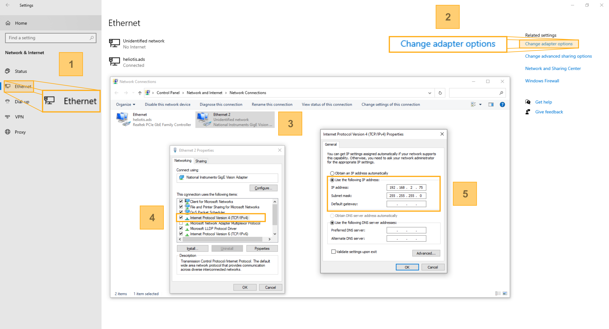
Fig. 10 Network Adapter IP Address Configuration
Open Network settings. (Start > System control > Network & Internet > Ethernet)
Open the dialog “Change settings”.
Select network to which the heliCamTM C4 is connected.
Open TCP/IPv4 - properties. (We also recommend you disable GigE vision filters if possible since they can interfere with the connection.)
Set the IP address to 192.168.2.x (with x=1-70 or 72-254), the subnet mask to 255.255.255.0 and confirm your choice.
{kind=link}
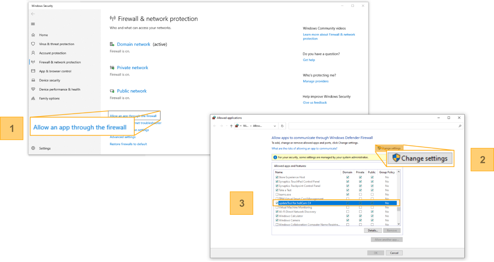
Fig. 11 Allowing Apps to communicate through the Windows Firewall
In the Windows firewall configuration menu (Start > System Control > Windows Firewall), open the dialog “Allow an app through the Firewall”.
Open the dialog “Change settings”.
Add authentication exceptions for C4Utility and heliViewer TM
\(\Rightarrow\) Add exceptions (tick) for public, private and domain networks.
Network Interface Controller
Heliotis recommends you use a separate Network Interface Controller (NIC) for the heliCamTM C4 instead of a router and switches. This ensures that the data transmission is faster, as the transmission line is not shared by multiple clients.
Checking the Software Setup
The program updateTool, that you installed as part of C4Utitlity , allows you to check if the software is set up correctly by verifying:
if the computer-side driver software is compatible with the firmware on the hardware.
whether the network connection between host computer and heliCamTM C4 could be properly established.
You may do so by opening the updateTool and pressing the button “Update Device List” to tabulate all available devices in the network (see Fig. 12).
{kind=link}
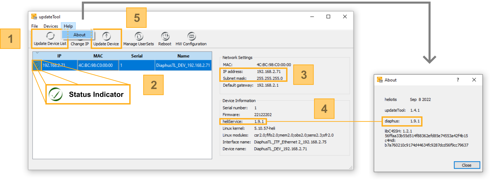
Fig. 12 Software Setup Check in updateTool
Detect devices in the network using the “Update Device List” button.
2. Select the heliCamTM C4. The status indicator reveals if the camera is ready for use or, if necessary, why it is not. A specific status message is displayed if you hover over the status indicator with your mouse.
3. A network configuration mismatch indicates that the network adapter IP address is not compatible with the heliCamTM C4’s, which is marked on the window’s right-hand side.
4. The heliCamTM C4 firmware component heliService and the computer-side driver software Diaphus communicate directly with one another. This communication is only successful if their versions match.
If necessary, update the selected heliCamTM C4 with an Image Package from the Heliotis download page.
The heliCamTM C4 should then appear along with a color-coded status indicator (see Table 6) to the left of its IP address. Your software setup is functional if the status indicator is a check mark. In the contrary case, it is a cross, meaning you must make adjustments. If the indicator’s color is orange, there is already an open connection to the camera. The indicator is green if the camera is ready for use, or red otherwise.
Sign |
Meaning |
|---|---|
A green check mark indicates that the camera is ready for use.
|
|
An orange check mark stipulates that your setup is
functional, and that you already have an open connection
to the heliCamTM C4 in some application.
|
|
An orange cross means you are not properly set up to
connect to heliCamTM C4 with this computer but
that another device in the network has an open connection
to it.
|
|
A red cross tells you, that an issue needs to be fixed
before you can interact with the camera.
|
{kind=link}
{kind=link}
{kind=link}
{kind=link}
Trouble Shooting
If the camera is not marked ready for use by a green check mark, proceed as follows (see Fig. 13):
An orange check mark does not indicate an error per se. If you want to update the heliCamTM C4 or open a new connection, simply close the application program from which originates the open connection or terminate the software connection within it.
The orange cross status indicator becomes a red cross, when closing the program that is accessing the heliCamTM C4 from some device in the network other than the computer running updateTool.
If the status indicator is a red cross, hover over it with your mouse to receive a specific status message.
A network configuration mismatch is flagged if the IP addresses of host and heliCamTM C4 are not compatible (see Fig. 12).
The connection to the camera cannot be established either if the firmware version on the heliCamTM C4 does not match the Heliotis software version installed on the host computer. The status message tells you in this case that the software versions of the camera-side heliService and computer-side Diaphus do not match (cf. Fig. 8).
\(\Rightarrow\) Install firmware to match C4Utility or vice versa. We recommend installing the latest version of C4Utility and updating the firmware accordingly. You can compare the version of the camera-side firmware component heliService (select the camera in the updateTool and the version is displayed on the right-hand side) explicitly with that of the computer-side counterpart Diaphus (found in the updateTool menu under Help/about). This is illustrated in Fig. 12.
If the heliCamTM C4 is not detected at all when pressing “Update Device List”, proceed with checking the hardware setup according to the relevant, foregoing section and making sure that your computer’s security measures do not prevent updateTool from connecting to the camera.
{kind=link}
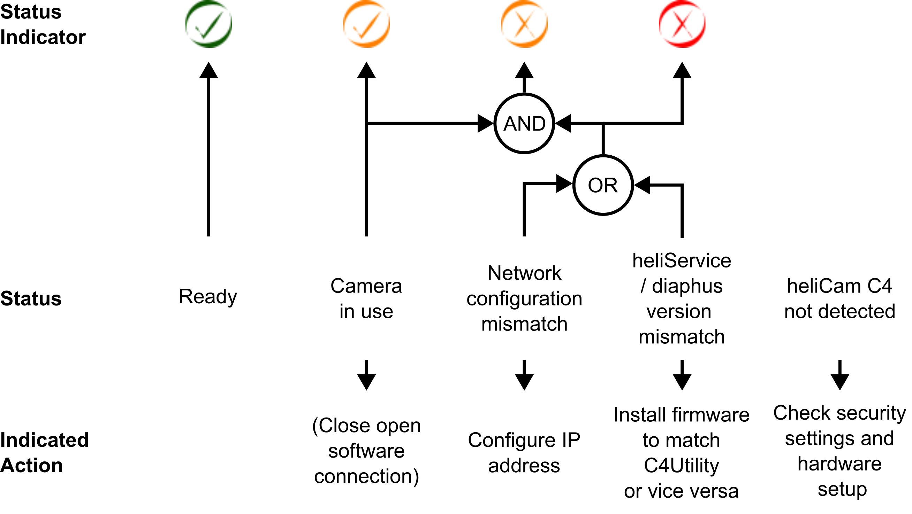
Fig. 13 Network Connection Trouble Shooting
Updating Firmware
In addition to verifying your software setup, updateTool also allows you to upgrade the firmware on both heliCamTM C4 and heliDriverTM D3 from the host computer using an installable board image.
If you wish to do so, make sure that the following prerequisite is met before continuing.
You have retrieved the installable Image Package, with the extension “.ipkg”, from the Heliotis webpage as described in the paragraph on downloading Heliotis software. There are multiple Image Packages available containing different versions of the firmware. Double-check that you have the desired version, which is usually the most recent one.
Then, update the lock-in camera in the updateTool as follows (see Fig. 14).
Click on the “Update Device” button, select the firmware Image Package you downloaded and press “Open”. The updating process gets initiated and can be tracked in a console that opens. The message “update done” appears once the installation is complete. Please be patient as the update can take several minutes. Since a reboot is initiated automatically, you can finish the update by clicking “Close”.
{kind=link}
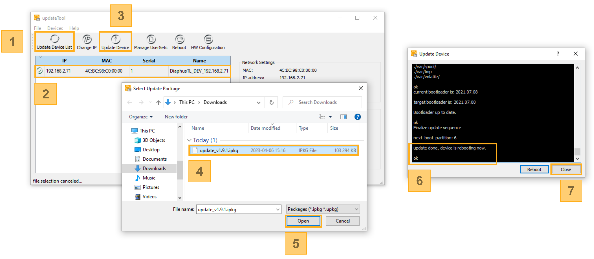
Fig. 14 Firmware Update
Update the device list.
Select the heliCamTM C4.
Click on the “Update Device” button.
Select the firmware Image Package you downloaded.
Press “Open”.
Wait until the Message “update done” appears in the box that pops up. Please be patient. The update process can take several minutes.
Finish the update by clicking “Close”.
Trouble Shooting
After the update is done, check that you can still connect to the heliCamTM C4 in updateTool. When updating the device list by pressing the corresponding button, the heliCamTM C4 must be listed and bearing a green status indicator in the update Tool. Should this not be the case, proceed as follows:
If the heliCamTM C4 is displayed, but its status indicator is not green:
\(\Rightarrow\) Make sure that the version of Diaphus running on your computer matches that of the newly installed firmware as described in the previous paragraph.
\(\Rightarrow\) Then, press “Reboot”, wait 10-30 seconds until the reboot is complete and update the device list again. (The first boot takes longer.)
If the previous step was unsuccessful or the heliCamTM C4 is not listed in the updateTool:
\(\Rightarrow\) Perform a power cycle (unplug the power supply and plug it back again) and update the list of devices after it booted.
Should the list still not contain the heliCamTM C4, contact Heliotis support. Please report the LED status on the heliDriverTM D3 so that Heliotis can provide you with targeted help.